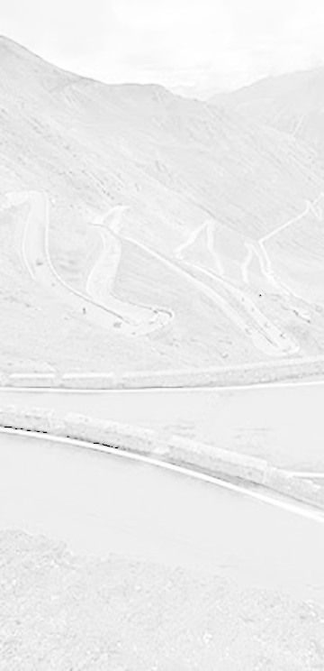

iline can be used for any number of activites where you are on the move
from the trails to the open road to the open seas
from the trails to the open road to the open seas
fit your Remote Dashboard Instrument wherever it suits your needs
fit it to a helmet, on your dashboard, on your cap
Anywhere, really
fit it to a helmet, on your dashboard, on your cap
Anywhere, really